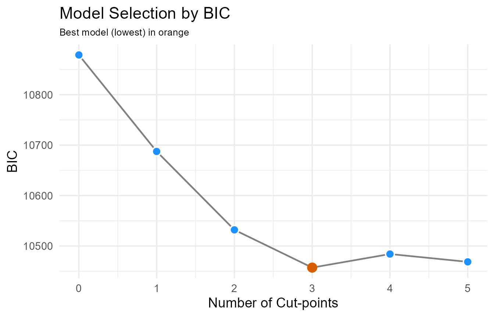
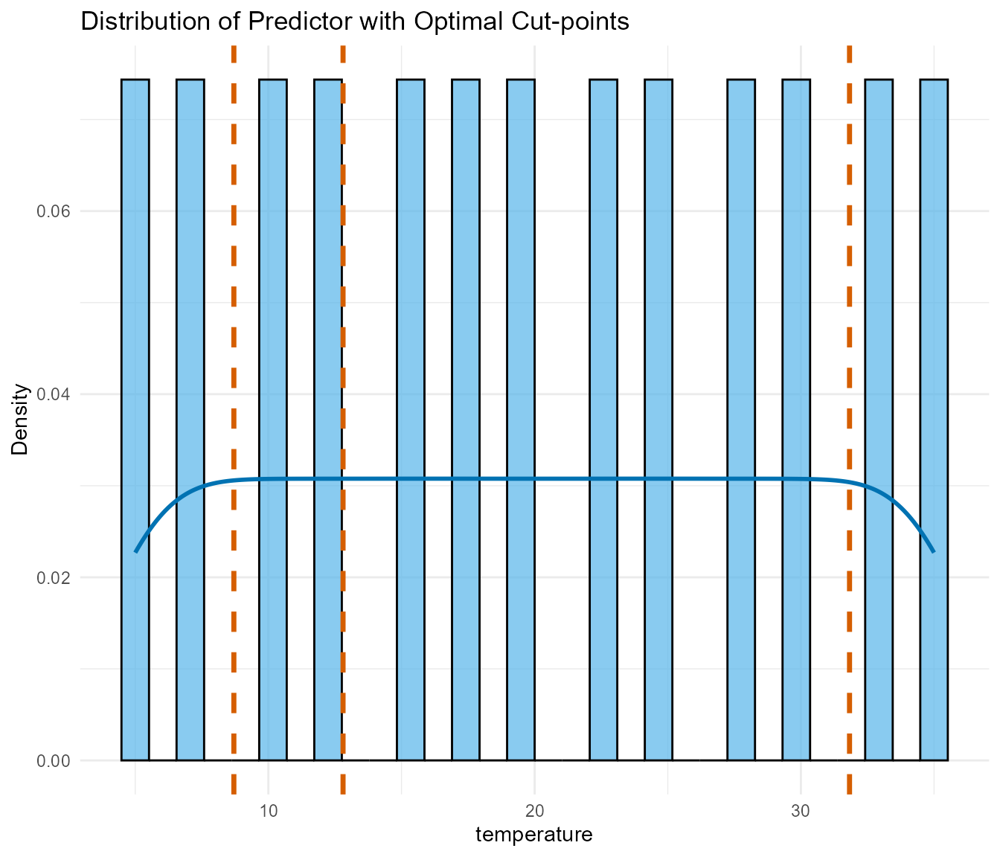
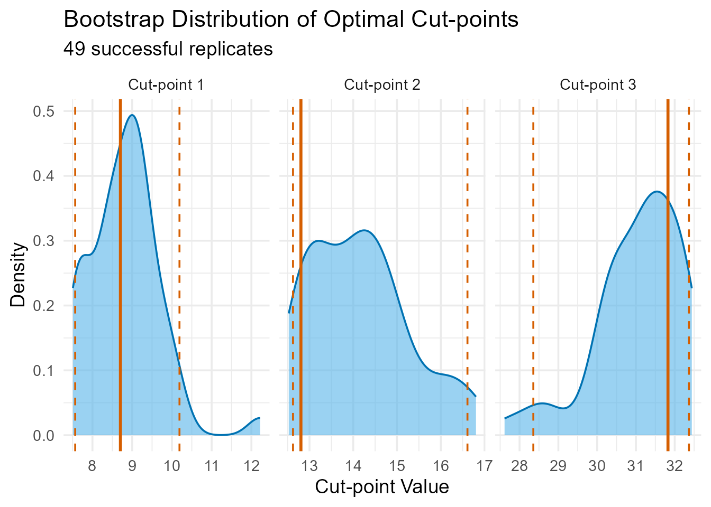
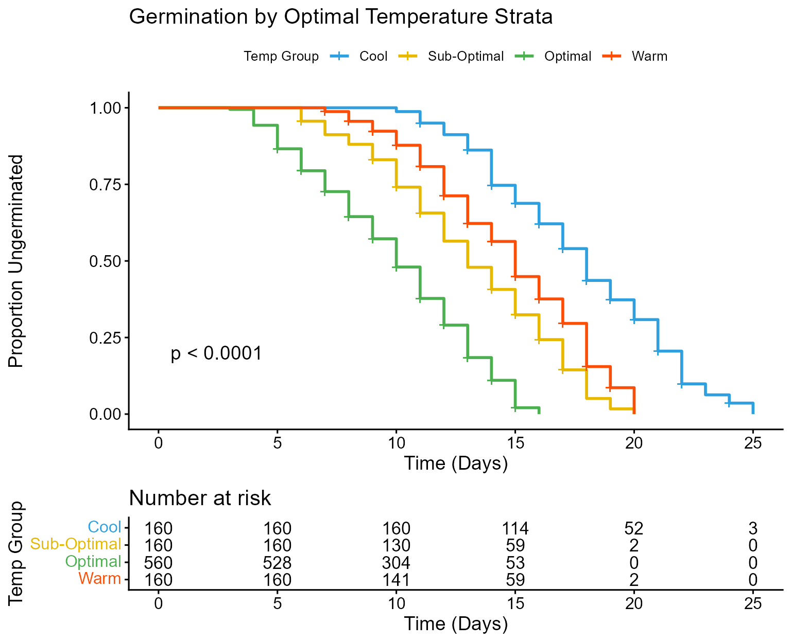
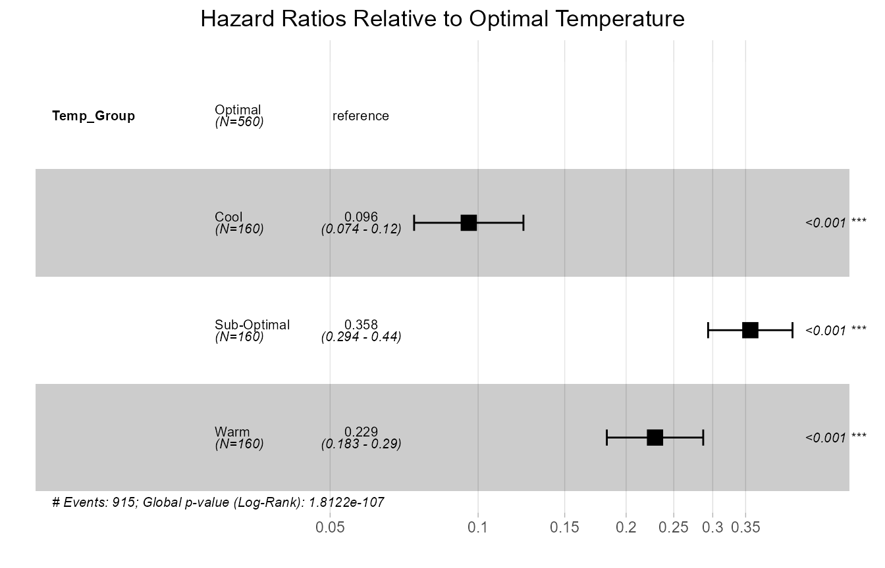
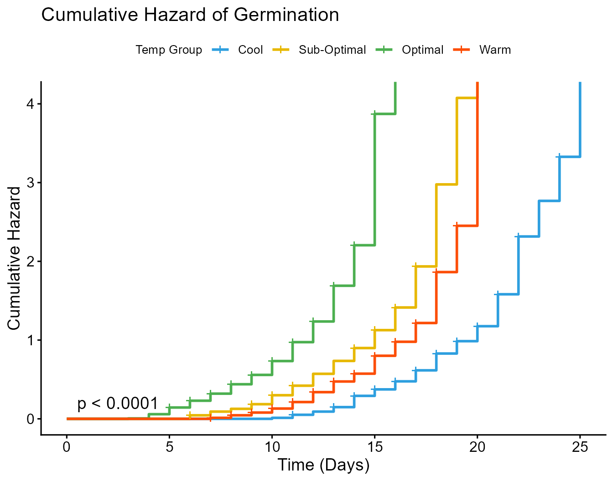

Analysing Rapeseed Germination Data with OptSurvCutR
A Workflow for Discovering and Validating an Optimal Temperature Threshold for Time-To-Event Data
Payton Yau
2025-11-19
Source:vignettes/Germination.Rmd
Germination.RmdIntroduction
In survival analysis, a common challenge is to stratify subjects based on a continuous predictor. The conventional approach is often to dichotomise this predictor using a single cut-point, typically the median. However, this method can be statistically weak and may fail to capture more complex, non-linear relationships. The fundamental question is often not just where to make a cut, but how many cuts are statistically justified.
This vignette demonstrates how the
OptSurvCutR package provides a
comprehensive workflow to solve this problem. We will address the
following research question:
Based on simulated data, can we find the optimal temperature threshold(s) that best separate fast and slow germination in rapeseed?
To answer this, we will use the germination dataset, which is included with the package. This dataset was simulated based on the findings of Haj Sghaier et al. (2022). It is intentionally designed to have a non-monotonic, U-shaped relationship between temperature and germination time, making it a perfect case study for testing a multi-cut-point algorithm.
Analysis Workflow
This guide covers a complete workflow for answering this question
using OptSurvCutR:
- Installation & Setup: Get the package and load our toolkit.
- Data Exploration: Visualise the raw germination patterns.
-
Step 1: Discovering the Optimal Number of
Cut-points: Use
find_cutpoint_number()to determine if 1, 2, or more thresholds are best. -
Step 2: Discovering the Optimal Value of
Cut-points: Use
find_cutpoint()to identify the specific temperature thresholds. -
Step 3: Validating the Cut-points: Use
validate_cutpoint()to assess the stability of our findings. - Visualisation and Interpretation: Create publication-ready plots to understand and present the results.
1. Installation & Setup
Installing OptSurvCutR
First, let us get the necessary tools. OptSurvCutR is in
development and it is on GitHub.
# Option 1: Install the development version from GitHub for the latest features
# You will need the 'remotes' package first: install.packages("remotes")
# remotes::install_github("paytonyau/OptSurvCutR")
# Option 2: Install the stable version from CRAN - Pending
# install.packages("OptSurvCutR")The Rapeseed Germination Data
To create a realistic dataset for demonstrating the package’s
capabilities, time-to-event data was simulated based on the findings of
Haj Sghaier et al. (2022). The simulation was designed in two parts to
generate a rich, continuous predictor with a non-linear relationship to
the outcome. First, a core dataset was generated based on parameters
reported directly in the source manuscript for seven distinct
temperature points (5, 10, 15, 20, 25, 30, and 35°C). These parameters
included the germination time window (start and end day), coefficients
for a linear growth model (slope and intercept), and the overall
germination rate for each temperature. Second, to create a more
continuous variable suitable for cut-point optimisation, these
parameters were linearly interpolated for six intermediate temperature
points (7.5, 12.5, 17.5, 22.5, 27.5, and 32.5°C). The final dataset,
germination, is included with the package and was formed by
combining these two simulated subsets.
# Load the pre-simulated data included with the package
data("germination", package = "OptSurvCutR")
analysis_data <- germination
head(analysis_data)
#> temperature replicate time growth germinated
#> 1 5 1 22 8.1091549 1
#> 2 5 1 18 0.0000000 0
#> 3 5 1 15 1.2184871 1
#> 4 5 1 22 6.0553687 1
#> 5 5 1 19 5.1456349 1
#> 6 5 1 14 0.4994083 12. Initial Data Exploration
Before modelling, we explore the raw data. The summary table below shows key germination metrics for each of the thirteen temperature groups included in the simulation.
# Create a summary table of the data
summary_table <- analysis_data %>%
group_by(temperature) %>%
summarise(
N_Seeds = n(),
N_Germinated = sum(germinated),
Germination_Rate_Pct = mean(germinated) * 100,
Avg_Time_to_Germinate_Days = mean(time[germinated == 1],
na.rm = TRUE)
) %>%
rename(`Temperature (°C)` = temperature)
# Display the table using kable for nice formatting
knitr::kable(summary_table,
digits = 2,
caption =
"Summary of Germination Outcomes by Temperature Group"
)| Temperature (°C) | N_Seeds | N_Germinated | Germination_Rate_Pct | Avg_Time_to_Germinate_Days |
|---|---|---|---|---|
| 5.0 | 80 | 70 | 87.50 | 18.73 |
| 7.5 | 80 | 71 | 88.75 | 16.08 |
| 10.0 | 80 | 72 | 90.00 | 13.93 |
| 12.5 | 80 | 73 | 91.25 | 11.85 |
| 15.0 | 80 | 74 | 92.50 | 10.64 |
| 17.5 | 80 | 76 | 95.00 | 9.72 |
| 20.0 | 80 | 78 | 97.50 | 9.59 |
| 22.5 | 80 | 77 | 96.25 | 10.18 |
| 25.0 | 80 | 75 | 93.75 | 8.51 |
| 27.5 | 80 | 74 | 92.50 | 9.36 |
| 30.0 | 80 | 73 | 91.25 | 10.75 |
| 32.5 | 80 | 58 | 72.50 | 12.78 |
| 35.0 | 80 | 44 | 55.00 | 14.59 |
Interpretation: This table confirms our data simulates the expected biological response. The highest germination rates (
Germination_Rate_Pct) and fastest average germination times (Avg_Time_to_Germinate_Days) occur in the intermediate 15-25°C range, with performance dropping off at colder (e.g., 5°C) and hotter (e.g., 35°C) temperatures. This confirms the non-monotonic relationship we expect.
3. The Three-Step Analysis Workflow
Step 1: Determine the Optimal Number of Cut-points
Our first step is to determine how many cut-points the data supports.
Forcing a single cut-point might be too simple, while too many might
overfit the data. find_cutpoint_number() uses information
criteria to provide statistical evidence for this decision.
Choosing Function Arguments
The function’s behaviour is controlled by two key arguments:
method and criterion.
| Method | How It Works | Recommendation | Rating (Accuracy & Performance) |
|---|---|---|---|
"systematic" |
Exhaustive Search: Tests every single possible cut-point. | Best for 1 cut-point; guarantees the optimal result. | Accuracy: ★★★★★ Performance: ★★★☆☆ |
"genetic" |
Evolutionary Search: Uses a smart algorithm to efficiently find a near-perfect solution. | Highly recommended for 2+ cut-points. Much faster than the systematic search. | Accuracy: ★★★★☆ Performance: ★★★★★ |
| Criterion | What It Is | Recommendation | Rating (Accuracy & Performance) |
|---|---|---|---|
"AIC" |
Akaike Information Criterion | Balances model fit and complexity. A good general-purpose choice. | Accuracy: ★★★★☆ Performance: ★★★★★ |
"AICc" |
Corrected AIC | A version of AIC with a greater penalty for extra parameters. It is specifically recommended for smaller sample sizes. | Accuracy: ★★★★★ Performance: ★★★★★ |
"BIC" |
Bayesian Information Criterion | Similar to AIC, but applies a stronger penalty for complexity, especially in larger datasets. It tends to favour simpler models. | Accuracy: ★★★★★ Performance: ★★★★★ |
We will use the "genetic" search method (suitable for
potentially multiple cuts) and the "BIC" criterion.
# Step 1: Find the number of cut(s) using BIC
number_result_bic <- find_cutpoint_number(
data = analysis_data,
predictor = "temperature",
outcome_time = "time",
outcome_event = "germinated",
method = "genetic",
criterion = "BIC",
max_cuts = 5, # Test models with 0, 1, 2, 3, or 4 cuts
nmin = 0.1, # Ensure groups have at least 10% of seeds
maxiter = 10, # REDUCED for vignette speed; use >= 100 for real analysis
seed = 42
)
#> num_cuts BIC Delta_BIC BIC_Weight Evidence
#> 0 10878.79 421.52 0% Minimal
#> 1 10687.53 230.25 0% Minimal
#> 2 10532.11 74.83 0% Minimal
#> 3 10457.27 0.00 99.7% Substantial
#> 4 10484.18 26.90 0% Minimal
#> 5 10468.70 11.42 0.3% Minimal
#> cuts
#> NA
#> 7.82
#> 11.59, 30.47
#> 7.76, 12.79, 30.26
#> 9.87, 17.5, 24.69, 30.01
#> 8.56, 13.47, 17.67, 23.71, 30.45
summary(number_result_bic)
#> num_cuts BIC Delta_BIC BIC_Weight Evidence
#> 0 10878.79 421.52 0% Minimal
#> 1 10687.53 230.25 0% Minimal
#> 2 10532.11 74.83 0% Minimal
#> 3 10457.27 0.00 99.7% Substantial
#> 4 10484.18 26.90 0% Minimal
#> 5 10468.70 11.42 0.3% Minimal
#> cuts
#> NA
#> 7.82
#> 11.59, 30.47
#> 7.76, 12.79, 30.26
#> 9.87, 17.5, 24.69, 30.01
#> 8.56, 13.47, 17.67, 23.71, 30.45
#> Group N Events
#> 1 G1 160 141
#> 2 G2 160 145
#> 3 G3 560 527
#> 4 G4 160 102
#> Call: survfit(formula = survival::Surv(time, event) ~ group, data = data)
#>
#> n events median 0.95LCL 0.95UCL
#> group=G1 160 141 18 17 19
#> group=G2 160 145 13 12 14
#> group=G3 560 527 10 10 11
#> group=G4 160 102 15 14 16
#> Call:
#> survival::coxph(formula = as.formula(formula_str), data = model_data)
#>
#> n= 1040, number of events= 915
#>
#> coef exp(coef) se(coef) z Pr(>|z|)
#> groupG2 1.3185 3.7378 0.1372 9.613 < 2e-16 ***
#> groupG3 2.3464 10.4480 0.1306 17.965 < 2e-16 ***
#> groupG4 0.8722 2.3922 0.1463 5.963 2.48e-09 ***
#> ---
#> Signif. codes: 0 '***' 0.001 '**' 0.01 '*' 0.05 '.' 0.1 ' ' 1
#>
#> exp(coef) exp(-coef) lower .95 upper .95
#> groupG2 3.738 0.26754 2.857 4.891
#> groupG3 10.448 0.09571 8.088 13.496
#> groupG4 2.392 0.41802 1.796 3.187
#>
#> Concordance= 0.706 (se = 0.008 )
#> Likelihood ratio test= 497.3 on 3 df, p=<2e-16
#> Wald test = 393.6 on 3 df, p=<2e-16
#> Score (logrank) test = 475.4 on 3 df, p=<2e-16A plot makes the choice clear. The lowest point on the curve indicates the optimal number of cuts.
plot(number_result_bic)
Information criterion (BIC) scores by number of cut-points. The lowest score indicates the optimal number.
Interpretation: The BIC analysis strongly suggests that a model with 3 cut-points is optimal, as it has the lowest information criterion score. This provides statistical justification for creating four distinct temperature groups (e.g., Cool, Sub-Optimal, Optimal, Warm), capturing the non-monotonic nature of the data better than a simpler 1- or 2-cut model.
Step 2: Find the Optimal Temperature Thresholds
Now that we know we need three cut-points, we use
find_cutpoint() to discover their specific values. We will
optimise for the "logrank" statistic to find the thresholds
that create the most statistically significant separation between the
time-to-germination curves of the resulting groups.
Choosing an Optimisation criterion
| Criterion | What It Optimises | Recommendation | Rating (Accuracy & Performance) |
|---|---|---|---|
"logrank" |
The statistical significance of the separation between survival curves (maximises the chi-squared statistic). | The most common and standard method. Best when the primary goal is to prove a significant difference. | Accuracy: ★★★★★ Performance: ★★★★★ |
"hazard_ratio" |
The effect size (maximises the Hazard Ratio). | Best for clinical interpretability. Finds the cut-point that creates the largest practical difference between groups. | Accuracy: ★★★★★ Performance: ★★★★☆ |
"p_value" |
The p-value from a Cox model (minimises the p-value). | A powerful way to find the most significant split, but the p-value itself should be interpreted with caution due to multiple testing. | Accuracy: ★★★★☆ Performance: ★★★★☆ |
# Step 2: Finding optimal cut-point values...
multi_cut_result <- find_cutpoint(
data = analysis_data,
predictor = "temperature",
outcome_time = "time",
outcome_event = "germinated",
method = "genetic",
criterion = "logrank",
num_cuts = 3, # Based on Step 1
nmin = 0.1, # Ensure groups have at least 10% of seeds
maxiter = 50, # REDUCED for vignette speed; use >= 100-500 for real analysis
seed = 123
)
summary(multi_cut_result)
#> Group N Events
#> 1 G1 160 141
#> 2 G2 160 145
#> 3 G3 560 527
#> 4 G4 160 102
#> Call: survfit(formula = survival::Surv(time, event) ~ group, data = data)
#>
#> n events median 0.95LCL 0.95UCL
#> group=G1 160 141 18 17 19
#> group=G2 160 145 13 12 14
#> group=G3 560 527 10 10 11
#> group=G4 160 102 15 14 16
#> Call:
#> survival::coxph(formula = as.formula(formula_str), data = data)
#>
#> n= 1040, number of events= 915
#>
#> coef exp(coef) se(coef) z Pr(>|z|)
#> groupG2 1.3185 3.7378 0.1372 9.613 < 2e-16 ***
#> groupG3 2.3464 10.4480 0.1306 17.965 < 2e-16 ***
#> groupG4 0.8722 2.3922 0.1463 5.963 2.48e-09 ***
#> ---
#> Signif. codes: 0 '***' 0.001 '**' 0.01 '*' 0.05 '.' 0.1 ' ' 1
#>
#> exp(coef) exp(-coef) lower .95 upper .95
#> groupG2 3.738 0.26754 2.857 4.891
#> groupG3 10.448 0.09571 8.088 13.496
#> groupG4 2.392 0.41802 1.796 3.187
#>
#> Concordance= 0.706 (se = 0.008 )
#> Likelihood ratio test= 497.3 on 3 df, p=<2e-16
#> Wald test = 393.6 on 3 df, p=<2e-16
#> Score (logrank) test = 475.4 on 3 df, p=<2e-16
#> chisq df p
#> group 1.79 3 0.62
#> GLOBAL 1.79 3 0.62A plot of the temperature distribution with the discovered cut-points overlaid gives us a clear visual confirmation.
# The plot.find_cutpoint function with type = "distribution"
# is a built-in wrapper for this visualization.
plot(multi_cut_result, type = "distribution")
Distribution of the predictor variable with optimal cut-points overlaid.
Interpretation: The algorithm has identified three temperature thresholds. These values (e.g., ~11.1°C, ~18.2°C, ~28.1°C, exact values may vary slightly due to reduced
maxiter) are not arbitrary; they represent the points that best separate the rapeseed seeds into four groups with statistically distinct germination time profiles, maximising the log-rank statistic.
Step 3: Validate the Cut-point Stability
A key question is whether these cut-points are stable or just an
artefact of our specific sample. We run a bootstrap analysis with
validate_cutpoint() to generate 95% confidence
intervals.
# Step 3: Validating cut-point stability with bootstrapping...
validation_result <- validate_cutpoint(
cutpoint_result = multi_cut_result,
num_replicates = 50, # REDUCED for vignette speed; use >= 500 for publication
n_cores = 1,
seed = 456,
maxiter = 10 # REDUCED; matches maxiter used in find_cutpoint
)
#> Cut-point Stability Analysis (Bootstrap)
#> ----------------------------------------
#> Original Optimal Cut-point(s): 8.703, 12.804, 31.826
#> Successful Replicates: 49 / 50 ( 98 %)
#> Failed Replicates: 1
#>
#> 95% Confidence Intervals
#> ------------------------
#> Lower Upper
#> Cut 1 7.565 10.190
#> Cut 2 12.624 16.609
#> Cut 3 28.355 32.367
#>
#> Bootstrap Summary Statistics
#> ---------------------------
#> Cut Mean SD Median Q1 Q3
#> 25% Cut1 8.818 0.879 8.883 8.257 9.252
#> 25%1 Cut2 14.145 1.131 14.160 13.125 14.755
#> 25%2 Cut3 31.059 1.095 31.279 30.436 31.986
#>
#> Hint: Use `summary()` or `plot()` to visualize stability.
summary(validation_result)
#> Cut-point Stability Analysis (Bootstrap)
#> ----------------------------------------
#> Original Optimal Cut-point(s): 8.703, 12.804, 31.826
#>
#> Bootstrap Distribution Summary
#> -----------------------------
#> Cut Mean SD Median Q1 Q3
#> 25% Cut1 8.818 0.879 8.883 8.257 9.252
#> 25%1 Cut2 14.145 1.131 14.160 13.125 14.755
#> 25%2 Cut3 31.059 1.095 31.279 30.436 31.986
#>
#> 95% Confidence Intervals
#> ------------------------
#> Lower Upper
#> Cut 1 7.565 10.190
#> Cut 2 12.624 16.609
#> Cut 3 28.355 32.367
#>
#> Validation Parameters
#> ---------------------
#> Replicates Requested: 50
#> Successful Replicates: 49 / 50 ( 98 %)
#> Failed Replicates: 1
#> Cores Used: 1
#> Seed: 456
#> Minimum Group Size (nmin): 93
#> Method: genetic
#> Criterion: logrank
#> Covaricates: NoneA density plot of the bootstrap results provides a powerful visual for assessing stability. Narrow, sharp peaks indicate a highly stable cut-point.
plot(validation_result)
Bootstrap distribution of the three optimal cut-points. The solid red line represents the original cut-point.
Interpretation: The bootstrap results provide confidence in our findings. The density plots show relatively concentrated peaks around the original cut-points (solid lines), and the 95% confidence intervals reported in the summary are reasonably narrow. This suggests that the identified thresholds are stable and likely reflect true underlying patterns in the relationship between temperature and germination time, rather than being artefacts of random sampling variability.
4. Visualising and Interpreting the Final Model
Now we can use our validated, optimal cut-points to create a final model and generate publication-ready visualisations.
# Extract the cuts for plotting
optimal_cuts <- multi_cut_result$optimal_cuts
# Create a temperature group variable with four levels
analysis_data$Temp_Group <- cut(
analysis_data$temperature,
breaks = c(-Inf, optimal_cuts, Inf),
labels = c("Cool", "Sub-Optimal", "Optimal", "Warm")
)Final Group Composition
This table shows which experimental temperatures were assigned to our four statistically-derived groups.
composition_table <- analysis_data %>%
group_by(Temp_Group) %>%
summarise(
Temperatures_in_Group = paste(sort(unique(temperature)),
collapse = ", ")
)
knitr::kable(composition_table,
caption = "Composition of Temperature Groups")| Temp_Group | Temperatures_in_Group |
|---|---|
| Cool | 5, 7.5 |
| Sub-Optimal | 10, 12.5 |
| Optimal | 15, 17.5, 20, 22.5, 25, 27.5, 30 |
| Warm | 32.5, 35 |
Plot A: Kaplan-Meier Curve by Optimal Groups
This plot shows the time-to-germination for the four groups. Note that in germination studies, the “event” is successful germination, so a dropping curve is a positive outcome (faster germination).
group_levels <- levels(analysis_data$Temp_Group)
# Custom palette for 4 groups
palette <- c("#2E9FDF", "#E7B800", "#4CAF50", "#FC4E07")
km_fit_final <- survfit(Surv(time, germinated) ~ Temp_Group, data = analysis_data)
# We can also use the built-in S3 plot method for a quick look
# plot(multi_cut_result, type = "outcome")
# Or use ggsurvplot for a publication-ready version
ggsurvplot(
km_fit_final,
data = analysis_data,
pval = TRUE,
risk.table = TRUE,
title = "Germination by Optimal Temperature Strata",
xlab = "Time (Days)",
ylab = "Proportion Ungerminated",
legend.title = "Temp Group",
legend.labs = group_levels,
palette = palette
)
Kaplan-Meier survival curve for germination by temperature group.
Kaplan-Meier Plot Interpretation: The plot confirms our cut-points successfully stratified the data based on germination speed. The “Optimal” group curve drops earliest and most steeply, indicating the fastest germination. The “Cool”, “Sub-Optimal”, and “Warm” groups show much flatter curves initially, confirming inhibited germination outside the optimal range. The highly significant p-value (< 0.0001) confirms the statistical difference between these groups’ germination profiles.
Plot B: Hazard Ratios (Forest Plot)
The forest plot visualises the Hazard Ratios (HR) for each group relative to the “Optimal” group. Remember, here the “hazard” is actually the rate of successful germination.
analysis_data$Temp_Group <- relevel(analysis_data$Temp_Group, ref = "Optimal")
cox_model <- coxph(Surv(time, germinated) ~ Temp_Group, data = analysis_data)
# We can also use the built-in S3 plot method
# plot(multi_cut_result, type = "forest", reference_group = "Optimal")
# Or use ggsurvplot for a publication-ready version
ggforest(cox_model,
data = analysis_data,
main = "Hazard Ratios Relative to Optimal Temperature"
)
Forest plot of Hazard Ratios for each temperature group relative to the optimal group.
Forest Plot Interpretation: This plot shows the rate of germination for each group compared to the “Optimal” group. An HR less than 1 (like for the “Cool” and “Warm” groups) means a significantly lower rate of germination. An HR greater than 1 would mean a higher rate. Since all confidence intervals are far from crossing the vertical line at 1.0, all groups have a germination rate that is significantly different from the optimal group.
Plot C: Cumulative Hazard Plot
This diagnostic plot helps visually check the proportional hazards assumption of the Cox model (that the HRs are constant over time). Parallel, non-crossing lines support the assumption.
ggsurvplot(
km_fit_final,
data = analysis_data,
fun = "cumhaz",
pval = TRUE,
title = "Cumulative Hazard of Germination",
xlab = "Time (Days)",
ylab = "Cumulative Hazard",
legend.title = "Temp Group",
legend.labs = group_levels,
palette = palette
)
Cumulative hazard plot for germination by temperature group, used to check the proportional hazards assumption.
Cumulative Hazard Plot Interpretation: The well-separated and parallel lines in the plot suggest that the proportional hazards assumption is met for this model, giving us confidence in the results from our Cox model and forest plot.
5. Conclusion & Next Steps
his vignette has demonstrated the three-step workflow for cut-point
analysis using OptSurvCutR. By following this workflow,
users can confidently identify and validate robust,
statistically-optimal thresholds in their own survival data, moving
beyond simple median splits to uncover more nuanced relationships.
We encourage you to try OptSurvCutR with your own
data.
-
Install the package from GitHub:
remotes::install_github("paytonyau/OptSurvCutR") - Report issues or suggest features on our GitHub page.
- Star the repository if you find it useful.
- Cite the package: Please cite the accompanying paper if you use OptSurvCutR in your research: Yau, Payton T. O. “OptSurvCutR: Validated Cut-point Selection for Survival Analysis.” bioRxiv preprint, posted October 18, 2025. https://doi.org/10.1101/2025.10.08.681246.
- If you find OptSurvCutR useful for your research, please consider supporting its ongoing development and maintenance. Your contribution helps keep the project alive and improving!
6. Session Information
For reproducibility, the session information below lists the R version and all attached packages used to run this analysis.
sessionInfo()
#> R version 4.5.2 (2025-10-31 ucrt)
#> Platform: x86_64-w64-mingw32/x64
#> Running under: Windows 11 x64 (build 26200)
#>
#> Matrix products: default
#> LAPACK version 3.12.1
#>
#> locale:
#> [1] LC_COLLATE=English_United Kingdom.utf8
#> [2] LC_CTYPE=English_United Kingdom.utf8
#> [3] LC_MONETARY=English_United Kingdom.utf8
#> [4] LC_NUMERIC=C
#> [5] LC_TIME=English_United Kingdom.utf8
#>
#> time zone: Europe/London
#> tzcode source: internal
#>
#> attached base packages:
#> [1] stats graphics grDevices utils datasets methods base
#>
#> other attached packages:
#> [1] cli_3.6.5 knitr_1.50 dplyr_1.1.4
#> [4] survminer_0.5.1 ggpubr_0.6.2 ggplot2_4.0.1
#> [7] survival_3.8-3 OptSurvCutR_0.1.9.1
#>
#> loaded via a namespace (and not attached):
#> [1] tidyselect_1.2.1 farver_2.1.2 S7_0.2.1 fastmap_1.2.0
#> [5] srr_0.1.4.009 digest_0.6.38 lifecycle_1.0.4 magrittr_2.0.4
#> [9] compiler_4.5.2 rlang_1.1.6 sass_0.4.10 tools_4.5.2
#> [13] yaml_2.3.10 data.table_1.17.8 ggsignif_0.6.4 labeling_0.4.3
#> [17] htmlwidgets_1.6.4 xml2_1.5.0 RColorBrewer_1.1-3 abind_1.4-8
#> [21] withr_3.0.2 purrr_1.2.0 desc_1.4.3 grid_4.5.2
#> [25] rgenoud_5.9-0.11 roxygen2_7.3.3 xtable_1.8-4 scales_1.4.0
#> [29] iterators_1.0.14 rmarkdown_2.30 ragg_1.5.0 generics_0.1.4
#> [33] rstudioapi_0.17.1 km.ci_0.5-6 commonmark_2.0.0 cachem_1.1.0
#> [37] stringr_1.6.0 splines_4.5.2 parallel_4.5.2 survMisc_0.5.6
#> [41] vctrs_0.6.5 Matrix_1.7-4 jsonlite_2.0.0 carData_3.0-5
#> [45] car_3.1-3 litedown_0.8 rstatix_0.7.3 Formula_1.2-5
#> [49] systemfonts_1.3.1 foreach_1.5.2 tidyr_1.3.1 jquerylib_0.1.4
#> [53] glue_1.8.0 pkgdown_2.2.0 codetools_0.2-20 ggtext_0.1.2
#> [57] cowplot_1.2.0 stringi_1.8.7 gtable_0.3.6 tibble_3.3.0
#> [61] pillar_1.11.1 htmltools_0.5.8.1 R6_2.6.1 KMsurv_0.1-6
#> [65] textshaping_1.0.4 doParallel_1.0.17 evaluate_1.0.5 lattice_0.22-7
#> [69] markdown_2.0 backports_1.5.0 gridtext_0.1.5 broom_1.0.10
#> [73] bslib_0.9.0 Rcpp_1.1.0 gridExtra_2.3 xfun_0.54
#> [77] fs_1.6.6 zoo_1.8-14 pkgconfig_2.0.3